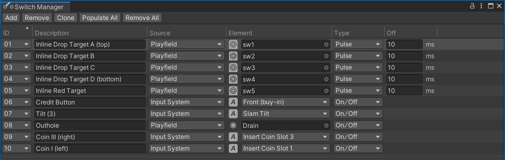

Switch Manager
During gameplay, the gamelogic engine needs to know what is happening on the playfield. For that reason, real pinball tables have switches all over the playfield that signal when a ball rolls over a certain position. These switches are also built into targets, bumpers, kickers, and some other items.
Wiring these switches up to the gamelogic engine per code can be a tedious process. That's why VPE provides a graphical interface where you can do it easily. It even can guess which switch maps to which game item, if you've named them accordingly.
You can open the switch manager under Visual Pinball -> Switch Manager.

Setup
Imagine every row as a wire connecting the physical switch to the gamelogic engine. The relation between the two is 0..n -> 0..n, meaning you can link multiple switches to multiple entries.
IDs
The first column ID shows the switch names that the gamelogic engine expects to be wired up.
Note
As we cannot be 100% sure that the gamelogic engine has accurate data about the switch names, you can also add switch IDs yourself, but that should be the exception.
Description
The Description column is an optional free text field. If you're setting up a re-creation, that's where you typically put what's in the game manual. It's purely for your own benefit and you can keep this empty if you want.
Source
The Source column defines where the element in the next column is located. There are three options:
- Playfield lets you choose a game item in the playfield
- Input System lets you choose an input action from a pre-defined list, i.e. cabinet switches
- Constant sets the switch at the beginning of the game to the given value.
Element
The Element column is where you choose which element triggers the switch.
For Playfield, you can choose a game item that triggers switch events. Currently, VPE only emits switch events for items that would do the same in real life, i.e. bumpers, gates, targets, kickers, spinners and triggers.
Note
We realize that you might want to use other game items like ramps and walls to emit switch events as well, and we will address this at some point, but for now we're keeping it simple.
If Input System is selected, you choose which input action to use. We call it "input action", because it's not an actual key binding. While actions have default key bindings, the final bindings will be defined in the host application. So what VPE is dealing with in terms of keyboard input is what we call input actions.
Finally, if Constant is selected, you choose the value that will be permanently set at the beginning of the game.
Type
There are two modes a switch can emit its events:
- On/Off has two distinct events, one for closing, and one for opening the switch. For example, triggers close when the ball rolls over it, and open again when the ball leaves.
- Pulse only receives one event from the element, and automatically opens after a short period of time.
Off
This column only applies to pulse switches, and defines the period of time the switch will stay closed. After that period expires, the switch will open again.
Note
We use the terms "open" and "close" for switches, since that's what they do in real life. In electrical terms these are called "NC" (normally closed) and "NO" (normally open). In summary, these terms are synonyms:
| Technical | Status | Common | In code |
|---|---|---|---|
| NO | Open | Off | false |
| NC | Closed | On | true |